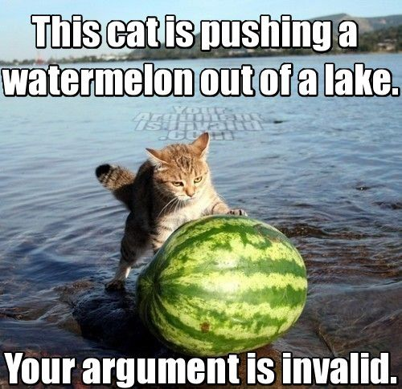
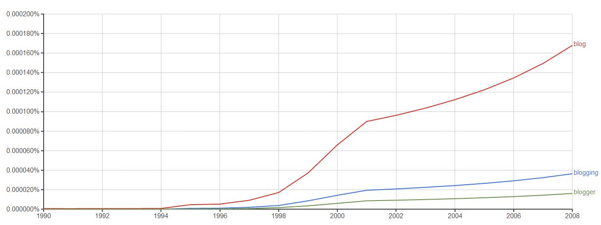
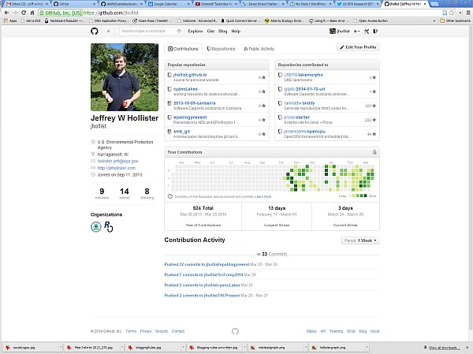
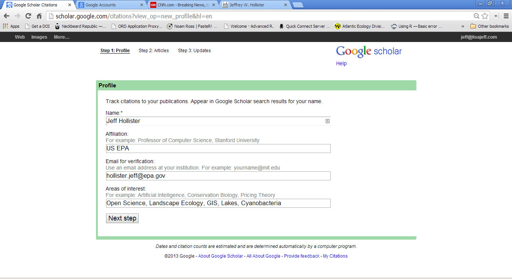
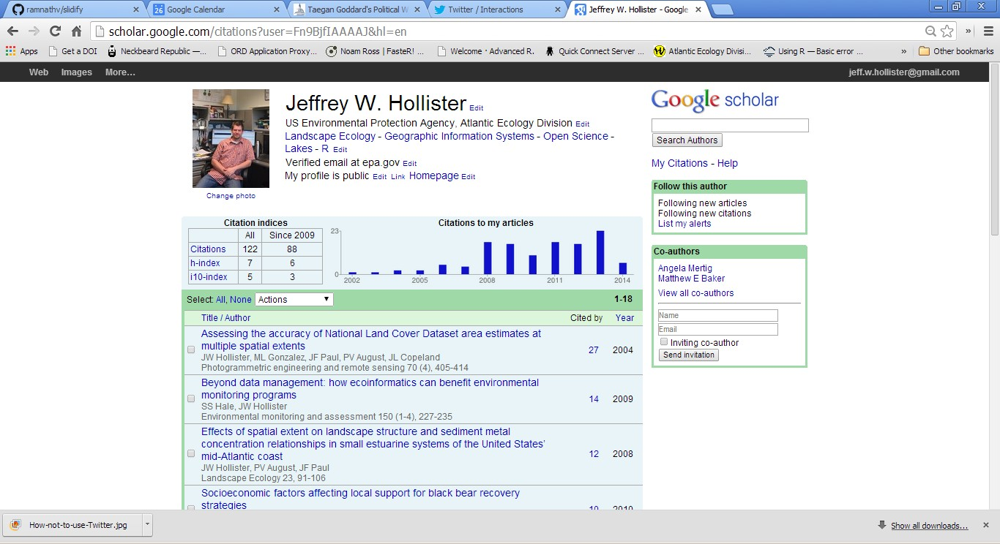
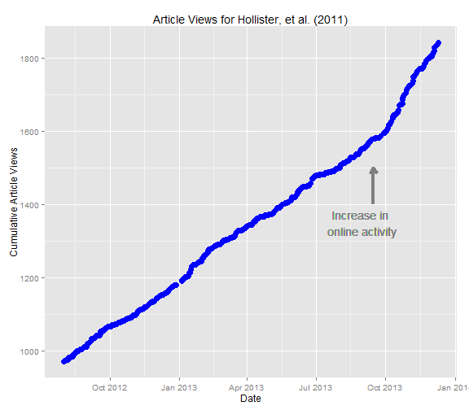
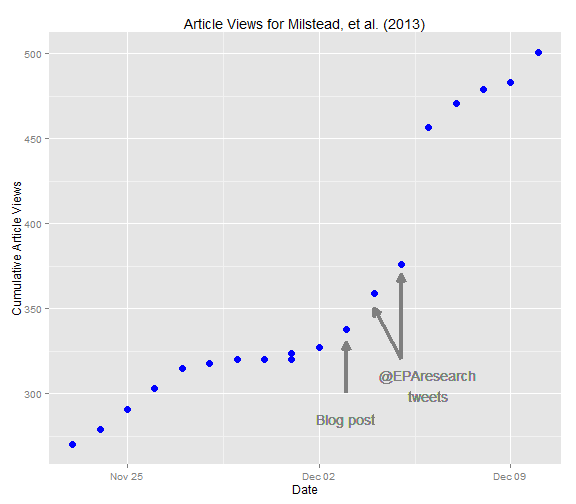

Blogging, Social Media, and Science
EPA Edition
Jeff Hollister
US EPA, Research Ecologist
Overview
- Blogging
- Twiiter
- Social Media
- Online Presence
- EPA Considerations
- Does it matter?

Blogging
Blogging: Defined?
- blog: Truncation of the term "web log."
- First used in mid to late 90's.
- Web based platform for sharing information or discussion about any subject.

Blogging: Defined?
- Informal (e.g. I Can Has Cheezburger)
- Professional (e.g. FiveThirtyEight)
- Science (LOTS!)
- Journals (e.g. PLOS, Scientific American )
- Agencies (e.g. EPA)
- Academics (e.g. Jeremy Fox: Dynamic Ecology, Simon Donner: Maribo)
- Topical Aggregators (e.g. R-bloggers)

Blogging: How?
Technologies
- Wordpress (.com vs .org)
- Blogger
- Tumblr
- Jekyll/Octopress
Styles
- Long Form (500+ words)
- Short Form (100 - 500 words)
- Visual (Short sentences, images)
- Gradient (crude > converstaional > formal (almost))
Blogging: Best Practices?
Rules
- Update frequency:
- choose one and stick with it
- but more frequent better than less
Comments:
- Respond!
- Moderate
Or ...
There are no rules

Blogging and EPA
Personal Blogs
Allowed, but...
- Not at work
- Careful with what gets posted
- No PII, non-cleared info, etc.

Blogging: EPA "Official" Blogs
Two options:
- Internal Blogs
- easy to set up
- easy to run
- no reviews of posts required
- limited reach
- Harmful Algal Blog
- External Blogs

Twitter
Twitter: What?
- Micro-blogging site
- Limited to 140 Characters
- Purpose: Share what you want, but keep it short (my definition)
- Followers, Following, Tweets
Risk Taking
Twitter: How?
- @jhollist
- #icanhazpdf or #rstats
- RT
- MT

Twitter: Why?
- Best bang for buck
- Low time investment
- Easier to mix personal/professional
- @EPAresearch and @TheOnion
- @PLOSLabs and @CharliePapazian

Twitter: EPAs take
Personal Account
- Same rules as blogs
- nothing that is sensitive
Official EPA Accounts
- Select few have access
- Use communications staff
- EPA
- ORD
- NHEERL
- SSWR
- etc.
- They welcome content!

Social Networks
Social Networks: What and How?
- Google+
- Linked-in
- ResearchGate
- Academia.edu

Github: A special case?
For code, but ...
- really just text
- manuscripts
- websites
- code
- etc.
- Social component

Online Identity
Online Identity
- Everything already mentioned
- Personal Webpage
- Google Scholar
- ImpactStory
- ORCID
If you are not curating your online identity, someone or something else is doing it for you.
- Jarrett Byrnes, i'm a chordata, urachordata
Online Identity: ORCID
- Open Researcher and Contributor ID (ORCID)
- Increasingly adopted
- Individual identifier
- Accepted widely
Online Identity: Google Scholar
- "My Citations" Page
- VERY easy
- Allows you to curate
- Research focused

Online Identity: Google Scholar
- "My Citations" Page
- VERY easy
- Allows you to curate
- Research focused

Online Identity: Google Scholar
- "My Citations" Page
- VERY easy
- Allows you to curate
- Research focused

Online Identity: ImpactStory
- Altmetrics
- Curate
- Pubs
- Presents
- Code
- Blogs
- Tweets
- "I am more than my h-index"

Does It Matter?
Does it Matter: What others think
Great Articles
- Social Media: Jarett Byrnes
- Twitter: Meg Duffy
- Blogging: Fox, (2012), Ideas in Ecology and Evolution
- Twitter: Darling et al, (2013), Ideas in Ecology and Evolution
- Blogging: Bik and Goldstein, (2013) PLOS Biology

Does it Matter: My Experience
A Few Examples
- Finding papers
- New Collaborations
- ROpenSci
- Software Carpentry
- Boston MOS/MIT
Does it Matter: My Experience
A Few Examples
- And a T-Shirt!

Does it Matter: Real Data 1
- Increased Online Activity
- Blog
- Personal Site
- Nothing Targeted

Does it Matter: Real Data 2
- Targeted Blog Post PLOS One
- Tweets
- @EPAresearch
- @jhollist

My Recomendations
In Order:
- Google Shcolar
- ORCID
- if you code: GitHub
- Read and Comment On Blogs
- Write posts for other Blogs (e.g. EPA's It all Starts with Science)
- Start your Own Blog
- Personal Page
- Whatever Social Networking sites you want (YMMV)
Comic Credits
- slid : Valuable Content
- slide : twitpic
- Slide : Mark Lynch
- slide : Forbes
- slide : Pirillio and Fitz
- slide : Hill and Seiple
- slide : Silverman and Essenpreis
- slide : Perfect Reputations
- slide : XKCD
- slide : Hill and Shah
{kind=link}
{kind=link}
{kind=link}
{kind=link}
{kind=link}
{kind=link}
{kind=link}
{kind=link}